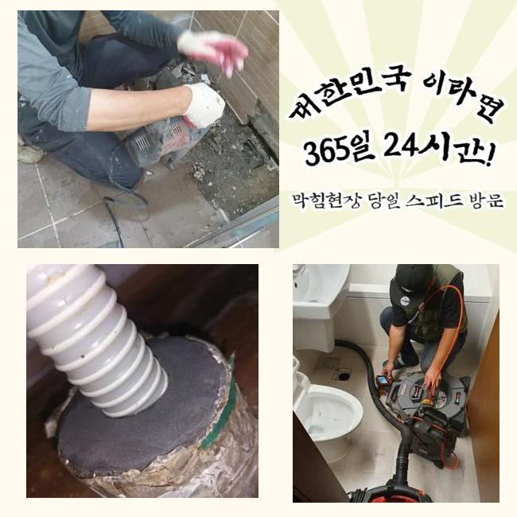
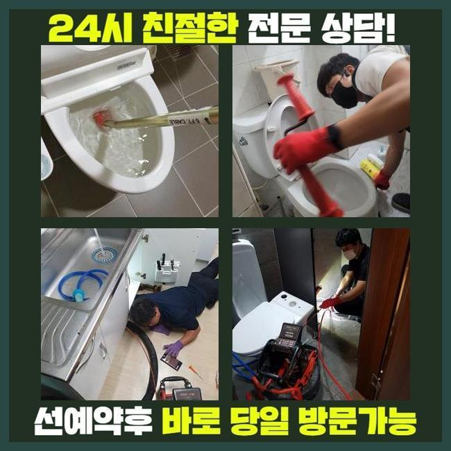
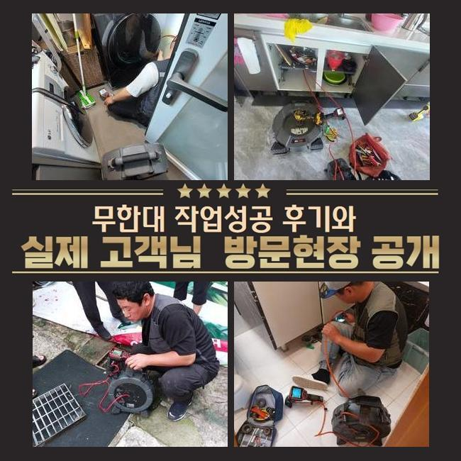
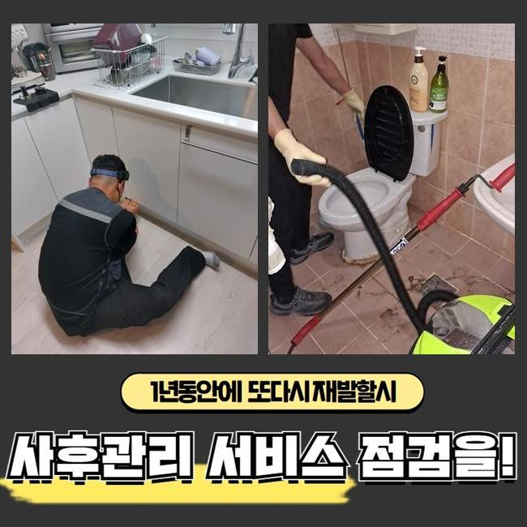
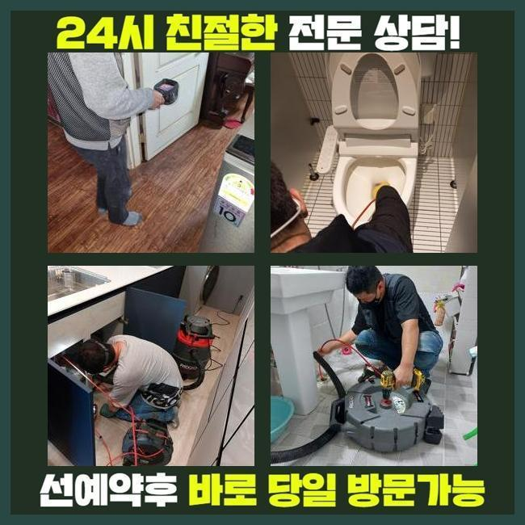
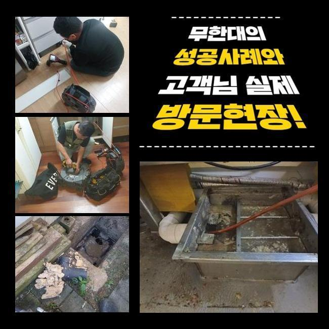

🏠 경주 하수구고압세척 싱크대냄새 대변기뚫기 아파트배관
용인 싱크대막힘 전문 시공 후기

📋 작업 개요
- 위치: 용인
- 서비스 유형: 싱크대막힘, 변기막힘, 하수구막힘, 배관막힘, 역류해결, 뚫는업체, 배관청소, 고압세척, 악취차단
- 작업 일시: 2025. 1. 3. 21:29
- 업체명: 하수구수사대 (010-5615-2118)
🔍 문제 상황
경주 하수구고압세척 싱크대냄새 대변기뚫기 아파트배관
쉼의 공간이 되어야할 주거지에서 가끔 일어나는 고장들이 있습니다
그것중 한가지로 하수관막힘을 설명드리고자 해요
배관이 막혀버리면 오취가 퍼지는것을 비롯하여 일상생활의 스트레스를 증가시키죠
하수관이 막힌상황으로 인하여 욕실사용을 하지못하고 역류상황까지 일어난다면 정말 난감해지겠죠
이번에는 가정집의 배관막힘이 일어나 여러가지의 장비류를 적용해서 해결한 내용을 안내해 드리도록 할게요
의뢰자께서는 다용도실 안에 배치된 통돌이세탁기기에서 물막힘이 일어났다며 저희쪽에 전화하셨는데요
차량안에 샤프트기기와 배관카메라 등의 진단기기를 싣고 현장쪽으로 가게 되었습니다
도착해 보니 고린내가 가득차 있었으며 이물질이 토출되어 있는 정황까지 목견할수 있었어요
세탁기를 가동시켜 물빠짐을 시도하였지만 도리어 바깥으로 흘러넘치는 모습이 발발하였다고 하소연하셨어요
간단하게 물만 토출되는게 아닌 여러가지 오물들도 나오는 상태였어요
일부의 시설에선 주방시설과 세탁실의 관로가 이어진 상황도 볼수 있답니다
그것 또한 확인하기로 했답니다
사태를 명확히 파악하려 의뢰자께 화장실이나 타 배관이 막혔거나 역류상황은 없었는가 여쭈어보았죠

🔎 원인 분석
💡 전문가 진단: 정밀 진단 장비를 사용하여 슬러지의 고착 여부를 판명하고 타격/세척 작업을 실시했습니다.
7일전쯤 물빠짐이 안되어서 마트에서 산 베이킹소다와 식초를 투입해보았다고 하셨는데요
이에 따라 싱크공간과 관계된 하수도에 고장의 사유가 있을거라 추정했답니다
저희들이 방문한 지점의 정체를 처치하려 사유를 살피기로 했죠
배관카메라를 투입시켜 정체가 생긴 배수관을 검사해보기로 결정했죠
배수공이 차단되어 내시경마저 안들어갈땐 방수청소기로 관로의 오물들을 처리하게 됩니다
해당 공정으로 시공시간을 줄일수가 있어요
세척공정 중에 상당량의 슬러지와 미세물질이 배출되었는데요
하지만 해당 업무만으로는 근원적인 막힘동기가 어떤것인지 간파하지는 못하였죠
초기에 실행한 흡입장비로 처치못하는 것들이 많았기 때문에 곧바로 내시경카메라를 집어넣어서 정체가 일어난 파이프를 관찰하기로 했어요
상태를 자세하게 조사하니 바닷가쪽에서 나오는 흙과 모래같은 것들이었어요
빨래를 하시다가 방출된 상황일 가망성이 높았죠
의뢰인분에게 휴가일정이 근래에 있으셨나 물었더니 부산쪽의 바닷가에서 캠핑을 하셨다고 말해주셨어요
우선하여 눈에띄는 잔재들을 처치하고 한층 공격적으로 세척작업을 진행합니다
그리고선 배수관 안쪽까지 소제가능한 장비들을 접목해보기로 했답니다

🔧 작업 과정
내시경기기를 활용하는 까닭은 배관전체의 문제점을 정확히 파악해내고 정체를 정리하기 위함이죠
흡입기계로 소제를 이행하고 가는 호스줄에 결속된 배관카메라로 관로 안을 조사해 보았어요
후미진 위치까지 점검했고 실체적으로 말썽이된 요소를 발견해낼수 있던거죠
보는바와 같이 하수구 정체는 여러가지 변인들에 기인하여 발생될수가 있겠고 해결책이 간단한것도 아니라고 말씀드려요
그렇기때문에 전문적인 장비들을 토대로 수선을 이행해야 순탄하게 마무리지을수가 있죠
혹여 대강 정체사태를 정리하려든다면 더욱더 막힘이 심화될수 있단걸 꼭 기억해주세요
배관 내부를 배관카메라로 진단하였어요
관의 기장은 생각보다 긴편이고 모양도 다양해서 직관적으로 인지하기에는 한계점이 있답니다
그럴때에 콤팩트한 내시경기기가 큰 임무를 할수가 있답니다
내시경내시경cctv로 하수관 안을 천천히 들여다보니 불규칙한 석회성분과 흙성분들이 혼재되어 있었어요
해당 물질은 수용성이 아니라 단단하게 경화되기 쉽답니다
자그마한 성분들은 하수관을 통해서 수월하게 밖으로 배출되겠지만 그것이 한번에 몰려서 투입돼버리면 이 지점처럼 막힘이 생길수 있는거죠
또한 그런 정황이 계속된다면 배수관에 단단한 물질층이 생겨날수도 있는거고요
이물의 크기와 양을 기준으로 적용하는 기계가 달라져요
일례로 양말같은 부피가 큰 물질이 있다면 쇠갈고리 등을 투입하여 끄집어낸 뒤에 흡입장비로 관로 안을 청소해야 됩니다
혹시라도 이러한 과정을 생략하고 샤프트기기를 바로 적용해버리면 하수관 내측이 한층더 망가질수가 있어요
이물들이 특정한 공간에 많이 모여있다면 그것들을 작게 부수는 스케일링을 진행하게 됩니다
이 현장은 모래알들과 뒤섞여 있었기에 플렉스샤프트를 이용해서 분쇄시키고 뚫어내기로 결정한것이죠
이곳에서는 전반적으로 누적된 잔재들을 소제하고 내시경설비로 거듭 관찰을 실시했어요
이후 상존하는 물질들은 분쇄기기로 정결히 정비하고 곧바로 물을 내려 보았는데요
이상없이 속시원히 빠져나가는걸 목견하게 되었습니다
시공과정에서 배출된 폐기물들을 전체적으로 소거하고 폐기하는것으로 업무를 마감하였어요


✅ 작업 완료
해당되는 물막힘을 사전에 방지하려면 정기적으로 하수구 진단해보았고 청소해야 됩니다
주방시설의 배수설비에선 기름슬러지가 막힘을 유발하고 역류증상까지 촉발하기도 해요
그럴땐 머뭇거리지 마시고 즉시 배관업체에 연락하시는게 바람직합니다
가정안에서 처치할수있는 방책은 본원적인 해결을 만들어내기 힘들며 트러블이 더욱더 나빠지는 케이스도 자주 볼수 있어요
배관업체의 클리닝과정은 간략히 일과를 정상화시키는걸 넘어서서 위생적인 안전성을 보존하는데도 긴요한 기능을 수행하죠
또 그문제가 계속 방치되면 인접세대에도 곤란한 상황을 야기할수 있다는것을 기억해두시길 당부드려요




⚠️ 주방 싱크대 배관 막힘 예방 수칙
- ✅ 기름기가 묻은 식기나 프라이팬은 설거지 전 키친타올로 반드시 기름때를 닦아내세요.
- ✅ 주기적으로 싱크대 개수대에 뜨거운 물을 가득 받아 한 번에 내려 배관 내부 기름을 씻어내세요.
- ✅ 배수구 거름망을 미세한 필터로 사용하시고 음식물 찌꺼기가 틈으로 새어 들지 않게 관리하세요.
- ✅ 베이킹소다와 식초를 뜨거운 물과 함께 일주일에 한 번씩 부어주면 배관 살균과 막힘 예방에 좋습니다.
💡 핵심 정리
- 확실한 장비 작업(내시경 점검 및 샤프트 스케일링)으로 원인을 뿌리 뽑습니다.
- 작업 후 1년 이내에 동일한 부위 재발 시 100% 무상 A/S 서비스를 보장합니다.
- 서울 · 경기 · 인천 전 지역에 24시간 언제든 긴급 출동할 수 있도록 항시 대기 중입니다.
❓ 자주 묻는 질문 (FAQ)
🚨 용인 싱크대막힘 문제로 고민이신가요?
정확한 원인 진단과 확실한 시공으로 재발 없는 해결을 약속드립니다.
24시간 긴급 출동 | 서울 · 경기 · 인천 전지역 | 1년 내 재발 시 무상 A/S